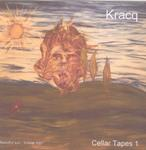

| Artist: | Kracq |
| Title: | Cellar Tapes 1 - Beautiful Sun - Forever Lost? 8 |
| Label: | Polumnia P011 |
| Length(s): | 76 minutes |
| Year(s) of release: | 2005 |
| Month of review: | [03/2006] |
| 1) | Mooneater - Introspection | 13.41 |
| 2) | Mooneater - Fight | 5.32 |
| 3) | Appendix & Practical II | 1.48 |
| 4) | Adapted Letter | 12.57 |
| 5) | Charlotte's Blues | 8.57 |
| 6) | Ritmus - Slow | 6.06 |
| 7) | Beautiful Sun - Forever Lost? | 12.05 |
| 8) | Visions And Reality | 13.53 |
| 9) | I Can't Find It | 1.28 |
Appendix & Practical II is short, and continues the vocal expresssions, which follow the spooky keyboards. The guitar resides somewhere in the back. The vocals have a very live feel. Adapted Letter is another long track, which opens with repeated loops. At first, it seems like a live track played in a bar, but then the loop stops and we come to a quirky synth dominated passage. There is even some singing here, not just vocal wailings, although Rutten does have the Dagmar Krause approach. The keys can be experimental, the use Fender Rhodes bring in a warm that the album really needs. Later, a sharp guitar sets in for some occasional outbursts. Towards the end the song starts to flow more, with the advent of sequencers, and repeated distorted lines over that.
Charlotte's Blues is only nine-minutes in length. The guitar is more dominant here, there are two of them in fact. The first one strumming, the second electric and, yes, bluesy. The vocals are very forward in this track. Later, the music becomes more like longing, and languid.
Ritmus - Slow is indeed a slow and rhythmic tune, rather melodic and for this band quite easy. The vocals are now deep in the music, although they are slowly coming forward, somewhere between singing and recitation. There is also a strong bass presence here, something I did not spot on earlier tracks at all.
The title track takes a long time to get started and has scary vocals by Rutten. The music is mainly effects played on guitar, and the music is very introspective (and hard to hear). Visions And Reality is another long and moody piece. The synths are strong here, taking the lead in developing that mood. Again, plenty of weird effects, almost musique concrete like. Later, we get some percussive... is that really piano? sounding like a bell of some kind. The melodies are subtle here.
I Can't Find It is a short track, a bit chaotic at first, with Rutten speaking and later vocalizing.